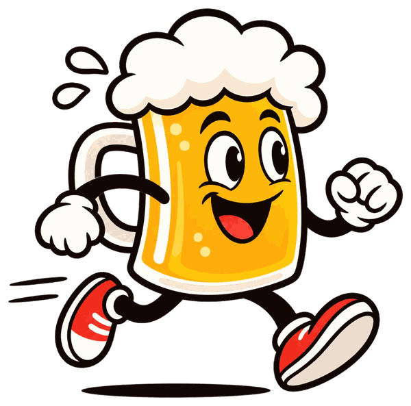
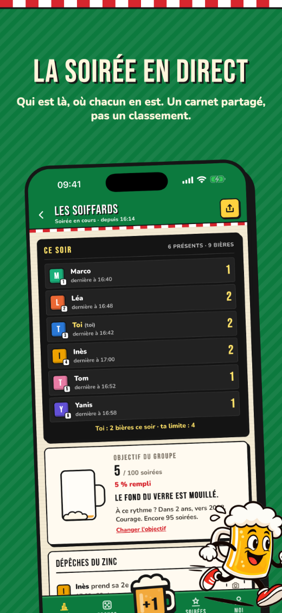
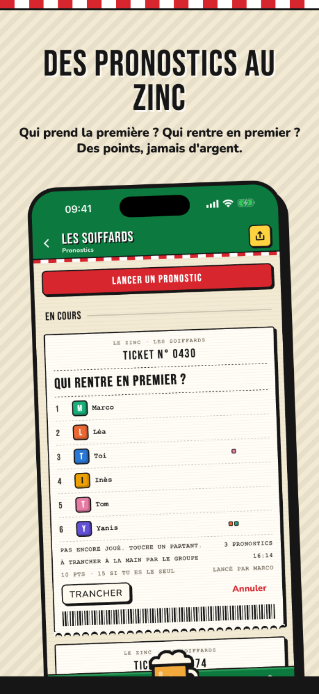
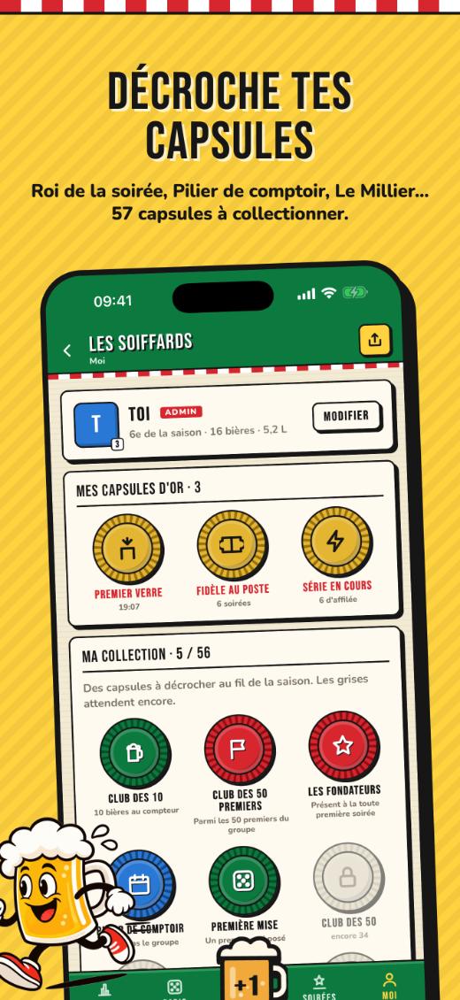
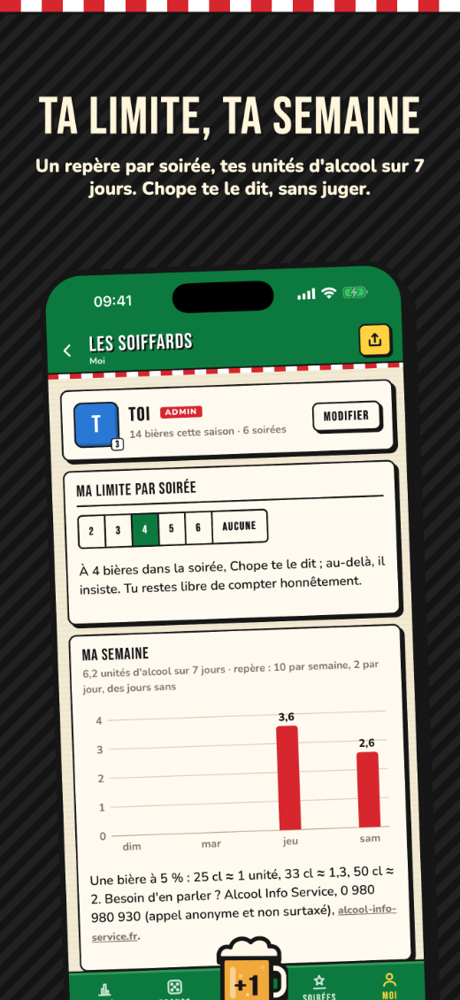
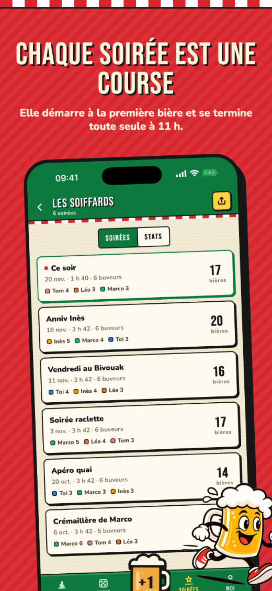
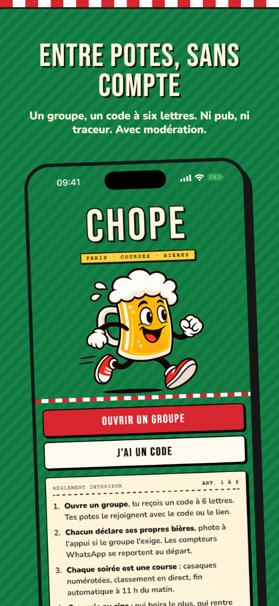

Chope
Potes · Soirées · BièresLe carnet de bières entre potes. Un groupe, un code, et la soirée se raconte en direct, comme au comptoir.
Bientôt sur l'App Store







Comment ça marche
Ouvre un groupe, tu reçois un code à six lettres. Tes potes le rejoignent avec le code ou le lien. Ensuite chacun déclare ses propres bières d'un +1, photo à l'appui si le groupe l'exige. La soirée démarre à la première bière et se termine toute seule le lendemain à 11 h.
La soirée
- Qui est là ce soir, où chacun en est, et le fil des bières et des photos
- Pas de classement, pas de course : Chope compte, il ne compare pas
- Un objectif de soirées ensemble, et une chope qui se remplit à chaque soirée terminée
Les pronostics du zinc
- Qui prend la première ? Qui rentre en premier ? Qui va chanter ?
- Des points seulement, jamais d'argent : 10 pour un bon pronostic, 15 si vous êtes le seul à avoir vu juste
- Le palmarès des devins départage les copains
Les capsules
- Des titres qui changent de main : Premier verre, Fidèle au poste, Nostradamus
- Une collection à décrocher : Les Fondateurs, Pilier de comptoir, Paparazzi, Sam, Dans les clous
Avec modération
- Votre limite par soirée : Chope vous prévient quand vous l'atteignez
- Votre semaine en unités d'alcool, avec les repères de Santé publique France
- Votre taux d'alcool estimé après chaque bière (formule de Widmark, calculée sur votre téléphone), avec l'heure à laquelle il repasse sous 0,5 g/L. Indicatif : seul un éthylotest fait foi
- Un rappel une heure après votre dernière bière, et le numéro d'Alcool Info Service (0 980 980 930)
Simple et discret
- Aucun compte, aucune publicité, aucun traceur
- Vos bières ne sont visibles que des membres de votre groupe
- Un bouton pour effacer toutes vos données, immédiatement
Règlement intérieur · Art. 6Entre adultes, avec modération. Chope compte, il ne pousse pas à boire. L'admin du groupe peut exclure un membre ou retirer une photo qui dérange. Besoin d'en parler ? Alcool Info Service, 0 980 980 930 (appel anonyme et non surtaxé), alcool-info-service.fr.